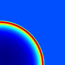

| << previous test | next test >> |
| variable name | absolute error | relative error |
|---|---|---|
| (||A - B||) | (||A - B||/||A||) | |
| level = 0 | ||
| gasDensity | 1.298761446e-13 | 2.729728184e-14 |
| x-GasMomentum | 2.788145962e-13 | 2.010407455e-13 |
| y-GasMomentum | 2.908102361e-13 | 2.096902654e-13 |
| z-GasMomentum | 2.904021831e-13 | 2.093960366e-13 |
| gasEnergy | 4.039824031e-13 | 7.380310629e-13 |
| gasInternalEnergy | 3.891054146e-13 | 1.326075154e-12 |
| tracer_particles_position_x | 1.8537949e-13 | 1.55088723e-13 |
| tracer_particles_position_y | 7.30249194e-14 | 6.10927431e-14 |
| tracer_particles_position_z | 1.17315879e-13 | 9.81466179e-14 |
| tracer_particles_real_comp0 | 1.18876436e-12 | 1.18876436e-12 |
| tracer_particles_real_comp1 | 4.00623978e-13 | 4.00623978e-13 |
| tracer_particles_real_comp2 | 7.91235133e-13 | 7.91235133e-13 |
| tracer_particles_id | 0.0 | 0.0 |
| tracer_particles_cpu | 0.0 | 0.0 |
